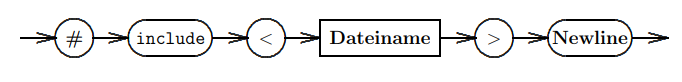

Characteristics of a language
Languages consist of three main characteristics:
- Lexis (specification on formation of words)
- Syntax (specification on formation of sentences)
- Semantic (meaning)
Lexis and lexical elements of C++
- keywords:
if,else - predefined identifiers:
int,char - identifiers:
temp1,diff- have to start with a letter (
_is allowed aswell) - can then contain arbitrary amount of characters/numbers
- are case sensitive
- have to start with a letter (
- special symbols: ; , : . + − ∗ / % > < = ! ˜ ˆ & | [ ] { } ( )
- separators: whitespace, tabulator, newline
- numeric values:
- decimal:
255 - octal:
377 - hexadecimal:
0xff - floats:
1.5or3.1e-15
- decimal:
- characters:
'a','#','\n'(in single quotes!) - strings:
"Test 1 \n"(in double quotes!) - comments:
-
//until end of line -
/* ... */multiple lines
-
Syntax and presentation method (Darstellungsmittel)
A method to present syntax is to use syntax diagrams. They represent a graphical alternative to e.g Backus–Naur form to represent formal or context-free grammar.
Elements of syntax diagrams
- ▭ a rectangle with sharp corners represents an abstract entity
- ▢ a ellipse (rectangle with rounded corners) represents a concrete term of the language, therefore an element of the lexis
- ⟶ an arrow indicates the flow direction (to build "sentences")
Example of an include directive represented as a syntax graph:

Boolean algebra, logical connectives and truth tables
C++ has the data type bool which can either be true or false. In integers a 0 is false and everything ≠0 is true.
| a | b | a && b | a ‖ b |
|---|---|---|---|
| false | false | false | false |
| true | false | false | true |
| false | true | false | true |
| true | true | true | false |
There is also the ! not operator to negate boolean values.
Using these boolean operators in C++, yields values of type bool (→ true or false)
Bitwise AND, OR, XOR, NOT
In digital computer programming, a bitwise operation operates on one or more bit patterns or binary numerals at the level of their individual bits. It is a fast and simple action, directly supported by the processor, and is used to manipulate values for comparisons and calculations.
These are the bitwise operators in C++ |, &, ~ and ^.
What is really important to understand is, that bitwise operators operate on the single bits (in comparison to boolean operators who operate on the whole value and yield true or false and are not bitwise operators!).
Bitwise NOT
The bitwise NOT, or complement, is a unary operation that performs logical negation on each bit, forming the ones' complement of the given binary value. Bits that are 0 become 1, and those that are 1 become 0. For example
~0111
= 1000
Comparing bitwise NOT to boolean NOT (the last letter indicates the number system e.g d = decimal, b = binary):
boolean NOT: !1_d = 0_d; !5_d = 0_d
bitwise NOT: ~1_d = 0_d; ~5_d = ~0101_b = 1010_b = 10_d
Bitwise OR
A bitwise OR takes two bit patterns of equal length and performs the logical inclusive OR operation on each pair of corresponding bits. The result in each position is 0 if both bits are 0, while otherwise the result is 1. For example:
0101 | 0011
= 0111
The bitwise OR shall not be confused with the boolean OR that treats its operands as boolean values and returns such.
The bitwise OR can be used to manage flags if a program has to handle a lot of booleans and the memory is really limited. Each bit of a binary number could itself represent a boolean value (eg 0 = false, 1 true).
For example 0010 may be seen as a list of flags where the first, second and fourth flag is not set (0), while the third flag is set (1). To set the first flag, this bit string can be combined with another bitstring that has a 1 in the first place:
0010
| 1000
= 1010
Bitwise AND
A bitwise AND takes two equal-length binary representations and performs the logical AND operation on each pair of the corresponding bits, which is equivalent to multiplying them. Thus, if both bits in the compared position are 1, the bit in the resulting binary representation is 1 (1 × 1 = 1); otherwise, the result is 0 (1 × 0 = 0 and 0 × 0 = 0). For example:
0101 (decimal 5)
& 0011 (decimal 3)
= 0001 (decimal 1)
The operation may be used to determine whether a particular bit is set (1) or clear (0). For example, given a bit pattern 0011 (decimal 3), to determine whether the second bit is set we use a bitwise AND with a bit pattern containing 1 only in the second bit:
0011 (decimal 3)
& 0010 (decimal 2)
= 0010 (decimal 2)
Because the result 0010 is non-zero, we know the second bit in the original pattern was set. This is often called bit masking. (By analogy, the use of masking tape covers, or masks, portions that should not be altered or portions that are not of interest. In this case, the 0 values mask the bits that are not of interest.)
The bitwise AND may be used to clear selected bits (or flags) of a register in which each bit represents an individual Boolean state. This technique is an efficient way to store a number of Boolean values using as little memory as possible.
For example, 0110 (decimal 6) can be considered a set of four flags, where the first and fourth flags are clear (0), and the second and third flags are set (1). The second bit may be cleared by using a bitwise AND with the pattern that has a zero only in the second bit:
0110 (decimal 6)
& 1011 (decimal 11)
= 0010 (decimal 2)
The bitwise AND can be used to check the parity(Parität, gerade ungerade) of a binary number, by checking the value of the lowest valued bit (1_d) which would be 1_b if the number is odd:
0110 (decimal 6)
AND 0001 (decimal 1)
= 0000 (decimal 0) -> even
0101 (decimal 5)
AND 0001 (decimal 1)
= 0001 (decimal 1) -> odd
0100 (decimal 4)
AND 0001 (decimal 1)
= 0000 (decimal 0) -> even
Bitwise XOR
In addition to or and and there is also xor (exclusive or → only one value true):
| a | b | a XOR b |
|---|---|---|
| false | false | false |
| true | false | true |
| false | true | true |
| true | true | false |
The bitwise XOR operator in C++ is ^.
A bitwise XOR takes two bit patterns of equal length and performs the logical exclusive OR operation on each pair of corresponding bits. The result in each position is 1 if only the first bit is 1 or only the second bit is 1, but will be 0 if both are 0 or both are 1. In this we perform the comparison of two bits, being 1 if the two bits are different, and 0 if they are the same. For example:
0101 (decimal 5)
XOR 0011 (decimal 3)
= 0110 (decimal 6)
The bitwise XOR may be used to invert selected bits in a register (also called toggle or flip). Any bit may be toggled by XORing it with 1. For example, given the bit pattern 0010 (decimal 2) the second and fourth bits may be toggled by a bitwise XOR with a bit pattern containing 1 in the second and fourth positions:
0010 (decimal 2)
XOR 1010 (decimal 10)
= 1000 (decimal 8)
This technique may be used to manipulate bit patterns representing sets of Boolean states.
Assembly language programmers and optimizing compilers sometimes use XOR as a short-cut to setting the value of a register to zero. Performing XOR on a value against itself always yields zero, and on many architectures this operation requires fewer clock cycles and memory than loading a zero value and saving it to the register (german: Wendet man XOR auf zwei identische Operanden an, so erhält man immer 0. In vielen Architekturen benötigt diese Operation weniger Rechenzeit, als man für das Laden einer 0 und das Speichern im Register benötigt).
Bitwise shifting / bit shifts
The bit shifts are sometimes considered bitwise operations, because they treat a value as a series of bits rather than as a numerical quantity. In these operations the digits are moved, or shifted, to the left or right. Registers in a computer processor have a fixed width, so some bits will be "shifted out" of the register at one end, while the same number of bits are "shifted in" from the other end.
The operator << shifts to the left by the following value and >> shifts to the right by the following value. For example:
0110 (6 in decimal) << 1 = 1100 (12 in decimal)
So 6 << 1 = 12 because the underlying bits are moved/shifted by 1 place to the left. Shifting left is equivalent to multiplication by powers of 2. So 6 << 1 is equivalent to 6 * 2, and 6 << 3 is equivalent to 6 * 2^3 = 6 * 8. A good optimizing compiler will replace multiplications with shifts when possible.
A logical right shift is the converse to the left shift. Rather than moving bits to the left, they simply move to the right. For example, shifting the number 12:
1100 (12 in decimal) >> 1 = 0110 (6 in decimal)
That will get us back our original 6. So we see that shifting to the right is equivalent to division by powers of 2.
Another example:
a = 1000 in decimal = 0000 0011 1110 1000 in binary
b = 3
a << b = 0001 1111 0100 0000 in binary = 8000 in decimal
a >> b = 0000 0000 0111 1101 in binary = 125 in decimal
There is also a difference between logical, arithmetic and circular shifting that you may want to look up.
Also note that the "" as a stream operator takes precedence over bit shifting so the following code:
int a, b;
a = 1;
b = 5;
cout << b << a << endl;
Would yield 51. To have it bitshifted one has to add parentheses:
int a, b;
a = 1;
b = 5;
cout << (b << a) << endl;
Which would yield 10 because b is leftshifted by a (n) which is equal to a multiplication with 2n and this case a is 1 so b is multiplcated by 2 which gives 10.